SGLottery is a full-stack application for scanning, storing, and analysing Singapore Pools 4D and TOTO lottery tickets. It covers the complete ticket lifecycle — from photo upload and OCR extraction, through automated result checking, to predictive statistical analysis.
The application requires a user account. On first visit, users are presented with a Login / Register screen. After authenticating, they are taken to the main dashboard with full access to all features.
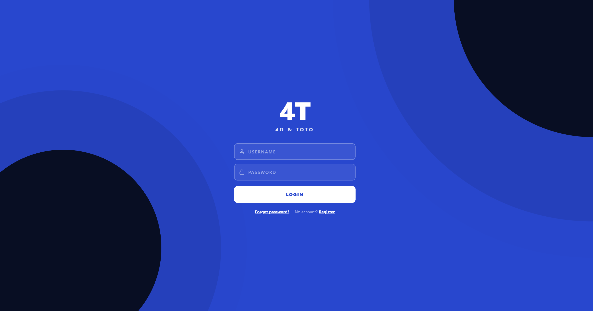
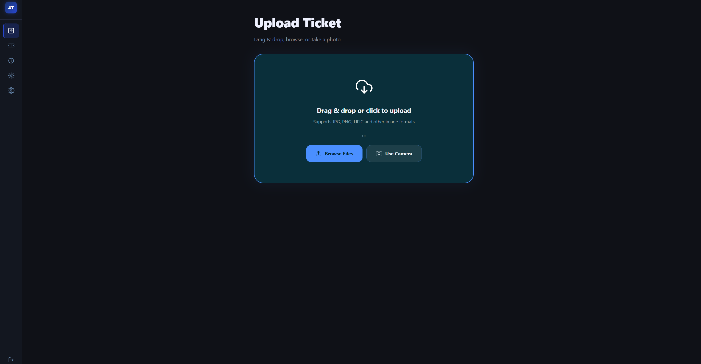
| Feature | Description |
|---|---|
| 📸 OCR Ticket Scanning | Upload a photo of any Singapore Pools 4D or TOTO ticket; numbers, dates, bet type and serial number are extracted automatically using OCR. |
| 🎯 TOTO System Bet Expansion | System 7–12 tickets are automatically expanded into all C(N,6) combinations (up to 924 for System 12) and stored in Firestore. |
| ✅ Automated Result Checking | Past-draw tickets are checked immediately on upload. Future-draw tickets are polled hourly by a backend cron job. |
| 🔔 Push Notifications | Win/loss alerts delivered via browser push (web) and Expo push notifications (mobile) when results become available. |
| 🔮 Predictive Analysis | Three independent statistical models generate 4D number and TOTO System 12 predictions from historical draw data. |
| 📊 Past Results Browser | Scrapes Singapore Pools for 4D and TOTO past results with mock-data fallback if scraping is blocked. |
| 📋 Ticket History | Full searchable, filterable, sortable history of all scanned tickets with detail modal and inline result checking. |
| Platform | Status | Notes |
|---|---|---|
| Web (Desktop Browser) | ✅ Full | Chrome, Firefox, Edge — http://localhost:5173 |
| Mobile Web (Browser) | ✅ Responsive | Same URL, fully responsive layout |
| Android (Expo Go) | ✅ Full | Scan QR code with Expo Go app |
| iOS (Expo Go) | ✅ Full | Scan QR code with Expo Go app |
| Tool | Minimum Version | Installation |
|---|---|---|
| Node.js | 18.x or later | https://nodejs.org — download LTS installer |
| npm | 9.x or later | Included automatically with Node.js |
| Git | 2.x | https://git-scm.com |
| Expo Go App | Latest | iOS App Store · Google Play Store |
| Tool | Purpose |
|---|---|
| Android Studio | Android emulator (not required for physical device) |
| Xcode 15+ (macOS only) | iOS simulator |
| Service | Purpose | Free Tier |
|---|---|---|
| Firebase (Firestore) | Database — stores tickets and draw results | Yes — Spark plan |
| ngrok | Expose localhost to physical mobile device | Yes — 1 tunnel free |
| OCR.Space API | Primary OCR engine (fallback to Tesseract if unavailable) | Yes — free key included |
Open a terminal and run:
node --version # Should show v18.x or higher npm --version # Should show 9.x or higher
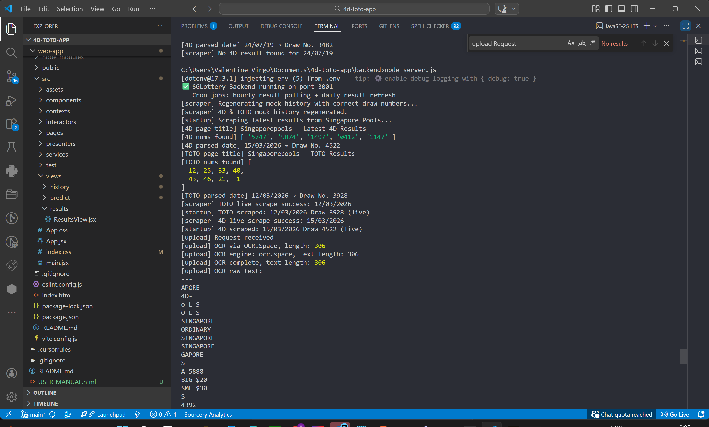
git clone <your-repository-url> cd 4d-toto-app
Each sub-project has its own dependencies. Install all three:
# Backend cd backend npm install # Web App cd ../web-app npm install # Mobile App cd ../mobile-app npm install
d-toto-app or click Add Project to create a new one.backend/serviceAccountKey.json.serviceAccountKey.json file contains your private Firebase credentials. Keep this file secure and never share or upload it to GitHub or any public repository.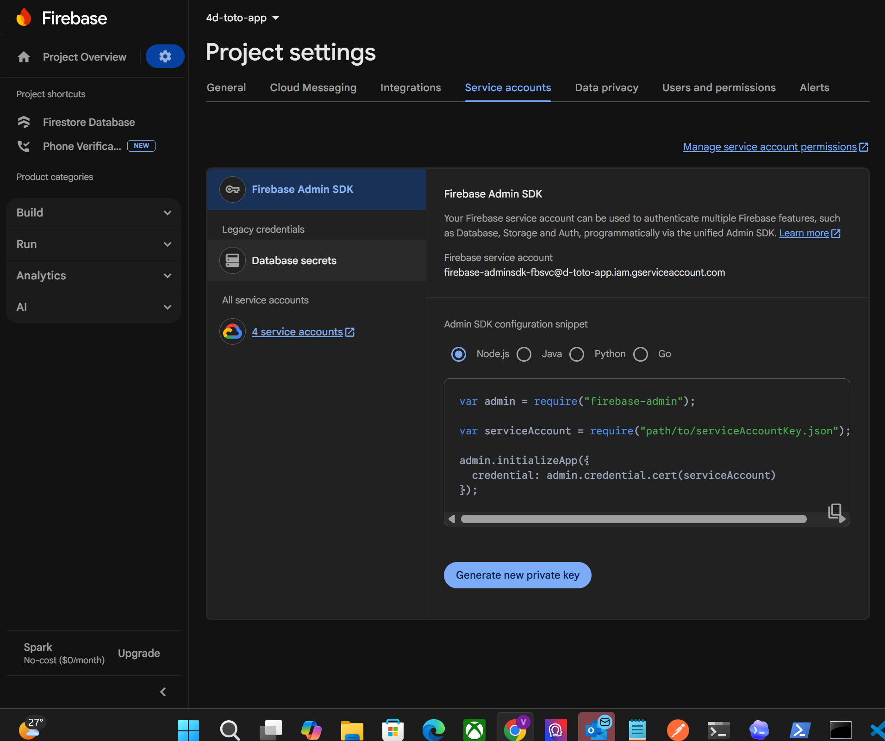
Navigate to Firestore Database → Indexes → Composite and create these indexes:
| Collection | Fields | Order |
|---|---|---|
tickets | resultStatus ASC · drawType ASC | Ascending |
tickets | gameType ASC · uploadedAt DESC | Mixed |
results_4d | drawDate ASC · scrapedAt DESC | Mixed |
results_toto | drawDate ASC · scrapedAt DESC | Mixed |
.env FileCreate a file at backend/.env with the following content:
PORT=3001 GOOGLE_APPLICATION_CREDENTIALS=./serviceAccountKey.json OCRSPACE_API_KEY=K87295079888957 JWT_SECRET=sglottery-secret-key-2026-change-in-production
| Variable | Purpose |
|---|---|
PORT | Port the Express server listens on (default 3001) |
GOOGLE_APPLICATION_CREDENTIALS | Path to the Firebase service account JSON key |
OCRSPACE_API_KEY | API key for OCR.Space (primary OCR engine); helloworld is a valid free demo key |
JWT_SECRET | Secret for signing JWT tokens (change in production) |
When testing on a physical device, localhost is not reachable from the phone.
Use ngrok to create a public HTTPS tunnel to your local backend.
npm install -g ngrok or download from https://ngrok.com/downloadnpx ngrok http 3001https://abc123.ngrok-free.app)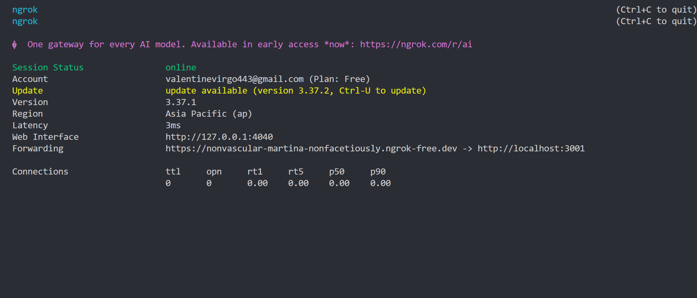
Files to update — change the const API = '...' line in each:
| File | Variable |
|---|---|
mobile-app/app/(tabs)/upload.tsx | const API = 'https://YOUR-NGROK-URL/api/tickets' |
mobile-app/app/(tabs)/history.tsx | const API = 'https://YOUR-NGROK-URL/api/tickets' |
mobile-app/app/(tabs)/index.tsx | const API = 'https://YOUR-NGROK-URL/api/tickets' |
mobile-app/app/(tabs)/results.tsx | const API = 'https://YOUR-NGROK-URL/api/results' |
mobile-app/app/(tabs)/predict.tsx | const API = 'https://YOUR-NGROK-URL/api/predict' |
mobile-app/hooks/useNotifications.ts | const API = 'https://YOUR-NGROK-URL/api/tickets' |
npx ngrok http 3001 — the Forwarding URL shown is your mobile backend URL.cd backend node server.js
Expected output:
✅ SGLottery Backend running on port 3001 Cron jobs: hourly result polling + daily result refresh
Verify the backend is alive by opening http://localhost:3001 in your browser — you should see a JSON health response.
cd web-app npm run dev
Expected output:
VITE v7.x ready in ~300ms ➜ Local: http://localhost:5173/
Open http://localhost:5173 in your browser. You will see the login screen — register a new account or log in to access the app.
cd mobile-appnpx expo startcd mobile-app npx expo start
| Key | Action |
|---|---|
a | Open Android emulator |
i | Open iOS simulator (macOS only) |
w | Open in web browser |
| Scan QR code | Open in Expo Go app on physical device |
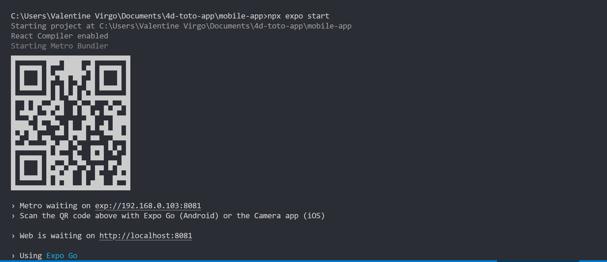
netstat -ano | findstr :3001 to find the PID, then taskkill /PID <pid> /FThe app requires an account. On first visit you will see the "4T — 4D & TOTO" login screen.
node server.js is running on port 3001.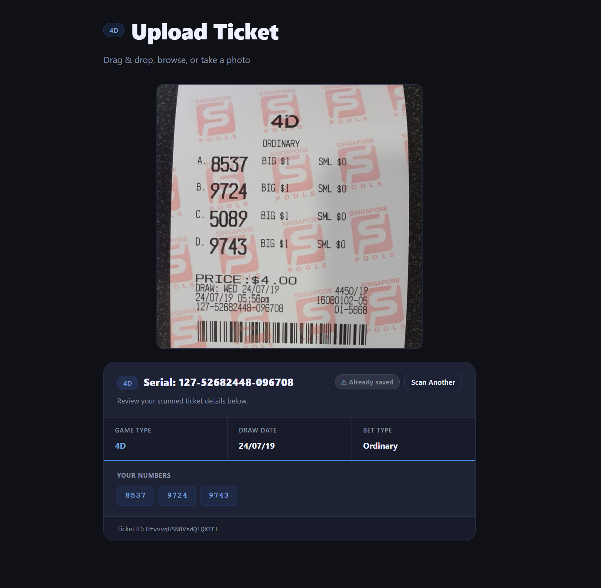
| Field | Example | Notes |
|---|---|---|
| Game Type | 4D or TOTO | Auto-detected from ticket text |
| Bet Type | Ordinary · iBet · Roll · System N · Quick Pick · iTOTO | All Singapore Pools bet types supported |
| Draw Date | 21/02/2026 | Extracted from DRAW line on ticket |
| Numbers | 5888, 4392 | 4-digit numbers (4D) or 6-number rows (TOTO) |
| Serial Number | 846367-8-9785369-004 | Extracted from line below the timestamp |
| Amount Paid | $10.00 | From PRICE line on ticket |
| Combination Count | 28 | Number of bet combinations (C(N,6) for systems) |
When a TOTO System ticket (System 7–12) is detected, the application automatically generates all possible 6-number combinations from the system numbers.
| System | Numbers Selected | Combinations Generated |
|---|---|---|
| System 7 | 7 | 7 |
| System 8 | 8 | 28 |
| System 9 | 9 | 84 |
| System 10 | 10 | 210 |
| System 11 | 11 | 462 |
| System 12 | 12 | 924 |
All combinations are stored in Firestore and used for result matching. Open any System ticket in the History detail modal to see the full expanded combination list.
| Scenario | Behaviour |
|---|---|
| Past draw (draw date already passed) | Results fetched immediately on upload. Win/loss status shown within seconds. |
| Future draw (draw date in the future) | Ticket saved as Pending. Backend cron job checks every hour. |
| Manual check | Click Check My Ticket on any history card, or open the detail modal and click Check Now. |
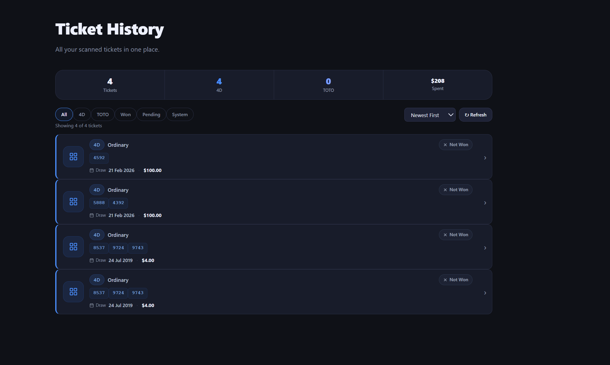
Web — Navigate to History in the navbar.
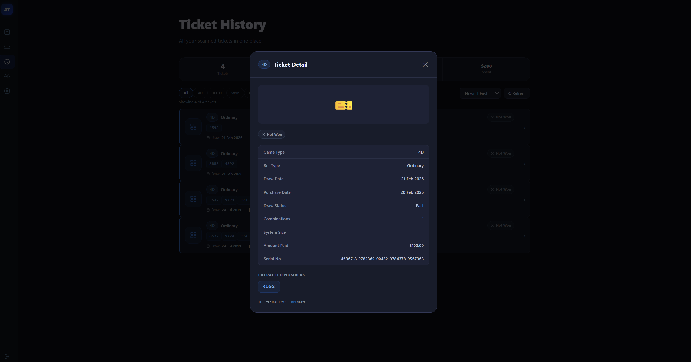
Web — Navigate to Results. Mobile — Tap the Results tab (📊).
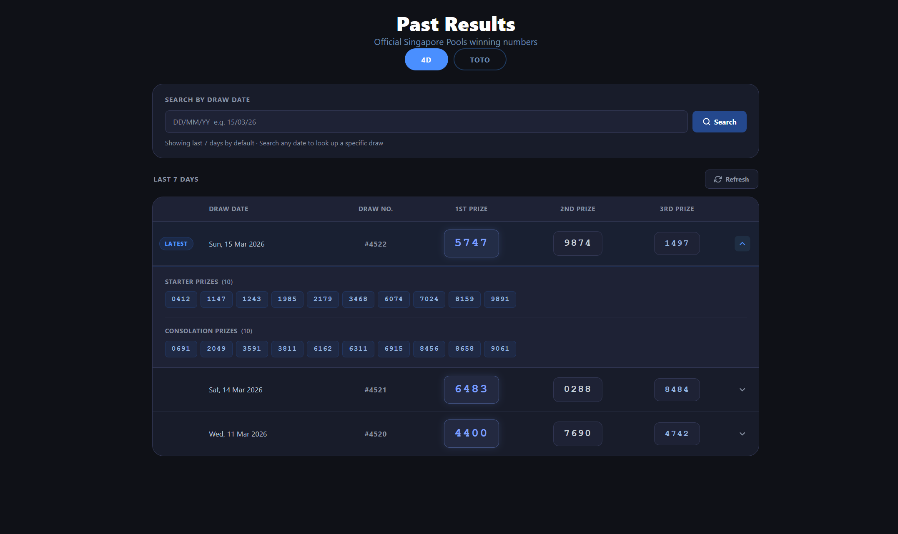
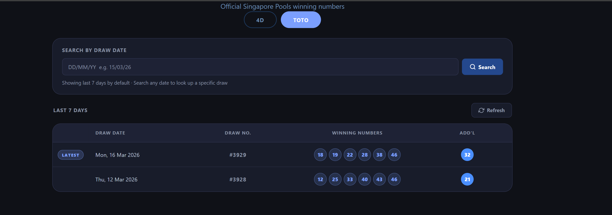
Web: Browser push notification permission is requested on first visit. Once granted, notifications fire when a pending ticket's result becomes available. An in-app banner also appears in the top-right corner.
Mobile: Expo push notification permission is requested on first app launch. Local notifications fire when a pending ticket result is found during polling, and after every successful OCR scan.
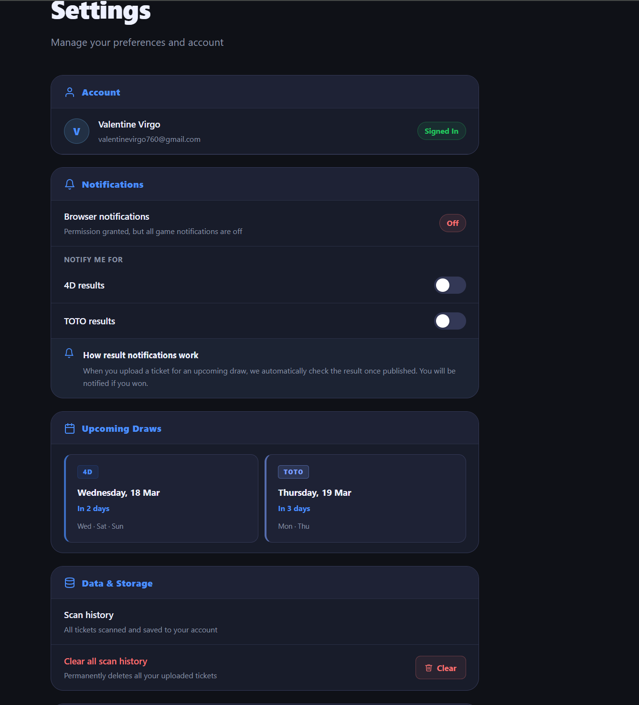
Navigate to Settings in the navbar.
Navigate to Predict (web navbar) or the Predict tab 🔮 (mobile).
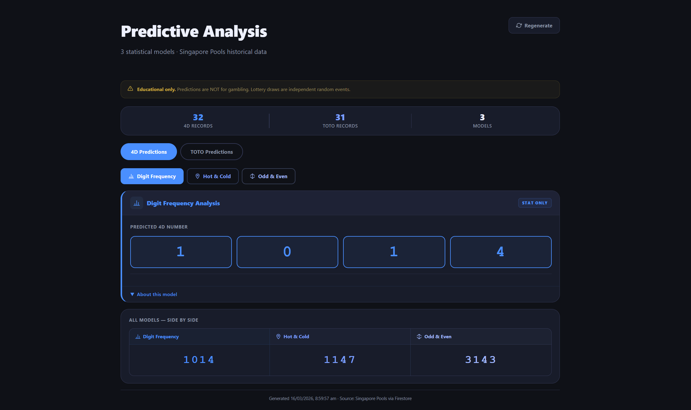
| Method | Counts how often each number/digit has appeared in recent draws, weighted by recency using exponential decay (recent draws count more). |
| 4D Output | Selects the most frequently occurring digit for each of the 4 positions independently. |
| TOTO Output | Selects the 12 most frequently occurring numbers from 1–49 (System 12). |
| Confidence | ~0.01% — equivalent to random chance. Demonstrates hot-number behaviour. |
| Method | Identifies numbers that have not appeared for longer than their statistically expected gap (cold numbers). Also tracks numbers on a recent streak (hot numbers). |
| 4D Output | Selects the most overdue digit per position. |
| TOTO Output | Selects the 12 coldest (most overdue) numbers from 1–49. |
| Confidence | ~0.01% — illustrates the Gambler's Fallacy: past absences do not increase future probability. |
| Method | Analyses the ratio of odd vs even numbers in historical winning draws and the distribution of numbers across low/high ranges. Selects numbers matching the most common pattern. |
| 4D Output | Picks digits matching the dominant odd/even positional pattern from past draws. |
| TOTO Output | Selects 12 numbers matching the most frequent odd/even distribution. |
| Confidence | ~0.01–0.05% — slightly higher because pattern constraints reduce the search space. |
Each model outputs a System 12 TOTO prediction:
Click the ▼ About this model button at the bottom of each model card to expand the full documentation panel, which includes:
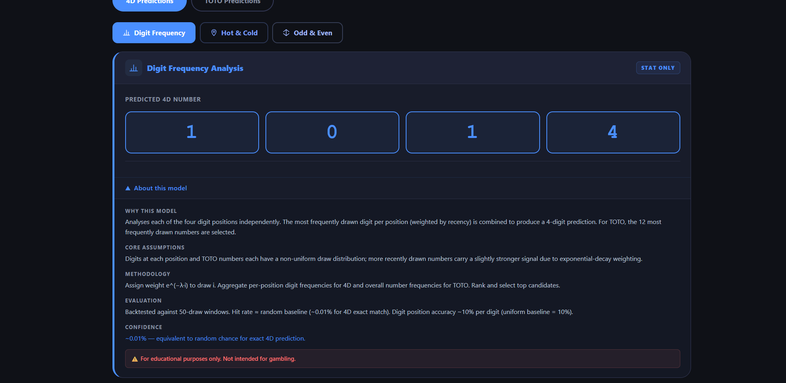
Click the Regenerate button on any model card to generate a new prediction set. Each run draws from the same historical data but applies randomised weighted sampling, so numbers will vary between runs.
node server.js) and web app (npm run dev).expandedCombinationCount is shown (e.g. 28 for System 8).POST http://localhost:3001/api/results/check/:ticketId using a tool like Postman or curl.npx ngrok http 3001 and update all mobile API URLs.npx expo start and scan the QR code with Expo Go.http://localhost:3001 in the browser.[upload] OCR raw text: log to see exactly what OCR extracted.helloworld), it has a 25,000 requests/month limit.serviceAccountKey.json exists in the backend/ folder.POST http://localhost:3001/api/results/check/:ticketId# Windows — find and kill the process holding port 3001 netstat -ano | findstr :3001 taskkill /PID <pid> /F # Then restart the backend node server.js
localhost — ngrok is required.ngrok-skip-browser-warning: true header is already set in all mobile API calls — this is required for ngrok free tier.| Issue | Status | Impact | Workaround |
|---|---|---|---|
| Singapore Pools scraper may be blocked by bot detection | Known | Past Results shows demo data instead of live data | Mock data fallback is automatic and labelled clearly |
| Firebase Storage disabled (requires Blaze plan) | Known | Ticket history cards show game-type icon instead of photo thumbnail | All features work fully; enable Storage by upgrading Firebase plan |
| OCR accuracy varies with image quality | Known | Numbers may be missed or misread on poor-quality scans | Use high-resolution, well-lit, flat photos |
| Expo background polling limited in Expo Go | Known | Push notifications only received while app is open | Build a standalone Expo app for full background push support |
| TOTO System 12 expansion (924 combos) write is async | Minor | Brief delay before all combinations appear in History detail modal | Wait a few seconds and refresh the History page |
| ngrok URL changes each session (free plan) | Known | Mobile app loses connection to backend after ngrok restart | Update the 6 API URL constants in mobile source files; or use ngrok paid plan for a static URL |
| Data | Where Stored | Retention |
|---|---|---|
| Extracted ticket data (numbers, dates, bet type) | Firebase Firestore | Until deleted by user |
| Ticket serial numbers | Firebase Firestore | Until deleted by user |
| OCR raw text (for debugging) | Firebase Firestore | Until deleted by user |
| Device push token | Backend memory only (not persisted) | Session only |
serviceAccountKey.json is excluded from Git via .gitignore..env file is excluded from Git — API keys are never committed.rules_version = '2';
service cloud.firestore {
match /databases/{database}/documents {
match /tickets/{ticket} {
allow read, write: if request.auth != null;
}
match /results_4d/{doc} {
allow read: if true;
allow write: if request.auth != null;
}
match /results_toto/{doc} {
allow read: if true;
allow write: if request.auth != null;
}
}
}
┌─────────────────────────────────────────────────────────────────────┐ │ SGLottery System │ ├──────────────────┬────────────────────┬─────────────────────────────┤ │ Web App │ Mobile App │ Backend API │ │ (Vite + React) │ (Expo + RN) │ (Express + Node.js) │ │ │ │ │ │ / Home │ 🏠 Home │ POST /api/tickets/upload │ │ /upload │ 📷 Scan │ GET /api/tickets │ │ /history │ 📋 History │ GET /api/tickets/:id │ │ /results │ 📊 Results │ DELETE /api/tickets/:id │ │ /predict │ 🔮 Predict │ GET /api/results/4d │ │ /settings │ │ GET /api/results/toto │ │ │ │ POST /api/results/check/:id│ │ │ │ GET /api/predict │ ├──────────────────┴────────────────────┴─────────────────────────────┤ │ Services Layer │ │ scraper.js → Singapore Pools web scraping + mock fallback │ │ combinations.js → TOTO system bet expansion C(n,6) │ │ matcher.js → Ticket vs official result comparison │ │ predictor.js → 3 statistical prediction models │ ├─────────────────────────────────────────────────────────────────────┤ │ Data Layer (Firebase) │ │ Firestore: tickets · results_4d · results_toto │ │ Storage: disabled (requires Blaze plan) │ ├─────────────────────────────────────────────────────────────────────┤ │ Background Jobs │ │ Cron (hourly): poll all pending future-draw tickets │ │ Cron (daily 23:00): refresh Singapore Pools results │ └─────────────────────────────────────────────────────────────────────┘
| Layer | Technology | Version | Purpose |
|---|---|---|---|
| Backend | Node.js + Express | v24 / v5 | REST API, OCR processing, cron jobs |
| OCR (Primary) | OCR.Space API | v2 | Cloud OCR with table/text detection |
| OCR (Fallback) | Tesseract.js | 5.x | Local OCR with watermark removal |
| Image Processing | Sharp | 0.33 | Watermark removal, resizing, greyscale |
| Database | Firebase Firestore | Admin SDK 13 | NoSQL document storage |
| Web Frontend | React 19 + Vite | 19 / 7 | SPA with React Router v7 |
| Mobile Frontend | Expo SDK 54 + React Native | 0.76 | Cross-platform iOS/Android app |
| Routing (Mobile) | expo-router | 4.x | File-based routing for Expo |
| Notifications (Web) | Browser Notification API | — | Push notifications in browser |
| Notifications (Mobile) | expo-notifications | 0.29 | Local + remote push notifications |
4d-toto-app/ ├── backend/ │ ├── server.js ← Express entry point + cron jobs │ ├── firebase.js ← Firebase Admin SDK init │ ├── routes/ │ │ ├── tickets.js ← Upload, list, detail, delete endpoints │ │ ├── results.js ← 4D/TOTO results scraping endpoints │ │ └── predict.js ← Prediction model endpoints │ ├── services/ │ │ ├── scraper.js ← Singapore Pools scraper + fallback │ │ ├── combinations.js ← C(n,6) system bet expansion │ │ ├── matcher.js ← Ticket vs result comparison │ │ └── predictor.js ← 3 statistical models │ ├── middleware/auth.js ← JWT auth middleware │ ├── serviceAccountKey.json ← Firebase key (git-ignored) │ └── .env ← Environment variables (git-ignored) │ ├── web-app/ │ └── src/ │ ├── App.jsx ← Router + Navbar + Footer │ ├── index.css ← Full design system CSS │ ├── pages/ ← Page wrappers │ ├── views/ ← Feature view components │ │ ├── history/ ← Ticket history + detail modal │ │ ├── predict/ ← Prediction model cards │ │ ├── results/ ← Past results browser │ │ └── upload/ ← Upload + OCR result card │ ├── presenters/ ← Business logic (MVP pattern) │ ├── services/ ← API client + notification scheduler │ └── components/ ← Shared UI components │ ├── mobile-app/ │ └── app/(tabs)/ │ ├── index.tsx ← Home tab │ ├── upload.tsx ← Scan tab │ ├── history.tsx ← History tab │ ├── results.tsx ← Results tab │ └── predict.tsx ← Predict tab │ ├── USER_MANUAL.md ← Source manual (Markdown) └── USER_MANUAL.html ← This document
Base URL: http://localhost:3001
Upload a ticket image for OCR processing and result checking.
| Property | Value |
|---|---|
| Content-Type | multipart/form-data |
| Field name | ticket (image file) |
Response (200):
{
"success": true,
"ticketId": "abc123",
"gameType": "TOTO",
"drawDate": "06/03/2026",
"numbers": ["05 15 22 33 41 46"],
"betType": "System 8",
"systemSize": 8,
"combinationCount": 28,
"expandedCombinationCount": 28,
"drawType": "past",
"comparison": { "won": false, "matches": [], "prizeTier": null }
}
List all tickets.
| Query Param | Type | Description |
|---|---|---|
gameType | string | Filter by 4D or TOTO |
limit | number | Max results (default 50) |
Get a single ticket by Firestore document ID.
Delete a ticket. Requires authentication header.
Manually trigger result checking for a single ticket. Fetches the draw result and updates resultStatus, prizeTier, and winMatches in Firestore.
Get past 4D draw results.
| Query Param | Type | Description |
|---|---|---|
date | string | Filter by date DD/MM/YYYY |
limit | number | Max results (default 20) |
Get past TOTO draw results. Same query params as 4D.
Generate predictions from all 3 models.
{
"predictions": [
{
"model": "Digit Frequency Analysis",
"modelId": "frequency",
"predicted4D": "3829",
"predictedTOTO": [4, 7, 15, 22, 33, 36, 41, 44, 46, 47, 48, 49],
"confidenceScore": 0.12,
"why": "...",
"assumptions": "...",
"methodology": "...",
"evaluation": "...",
"confidence": "...",
"disclaimer": "..."
}
],
"dataPoints": { "fourd": 50, "toto": 100 },
"generatedAt": "2026-03-16T10:00:00.000Z",
"disclaimer": "For educational purposes only."
}
#4a8fff) as the single accent colour — removed all red, gold, cyan and purple accents for a cleaner, more elegant look.checkAndNotify() is now called at timer execution instead of deprecated fire().#4a8fff).